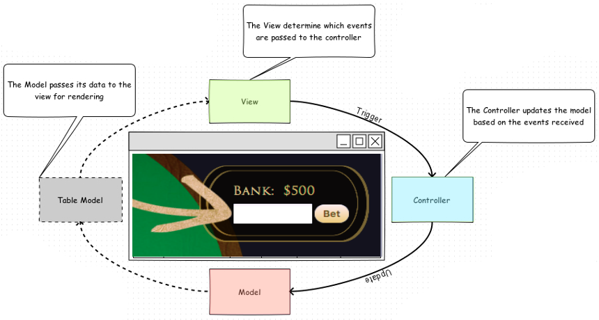

Card Casino
Card Casino is a desktop application for playing Blackjack and Poker. Users are able to choose which game they want to play, declare a betting amount, and play the chosen game. After each game is finished, the amount won or lost will be added or subtracted from the user's bank. Their bank will stay with them throughout their time in the casino. Users will have the option of playing the same game again, playing the other game, or leaving the casino. The end goal of Card Casino is to provide entertainment to the user and either teach them how to play or help improve their playing skills.
Key Features
- Starting Menu
- Single Player
- Blackjack
- Video Poker
- Universal Bank
- End Game buttons to return to menu
MVC Architechure Pattern

Class Diagram

Design Patterns
The Singleton pattern was implemented in making the universal bank feature of the casino. The pattern ensures that there can only be one instance of this class and it is a shared resource among several classes.
Looking back, I also should have used the Observer pattern to update the GUI by connecting it to the console.
Walk Through
First screen the player sees is the main menu of the casino.
When the "Play Blackjack" button is clicked, the Blackjack screen loads a new game. Start by placing a bet and then click the "Deal" button.
Two cards are dealt to each player. The player can only see one of the dealer's cards at this point and the player's hand value is displayed to the left of their cards.
The player chooses "Hit", "Stand", or "Double" and plays accordingly and the players hand value is compared to the dealer's. To win, the player must have a hand value less than or equal to 21 and have a greater value than the dealer.
When the "Play Poker" button is clicked, the Poker screen loads a new game. Start by selecting a bet level and then click the "Deal" button.
The table column corresponding to the chosen bet level will be highlighted in the pay table and cards will be dealt.
To remove unwanted cards from the hand, click the "Discard" button under that card. After clicking the "Finish" button, the discarded cards will be replaced with new cards and the hand will be evaluated.
If the player wins, the table row corresponding to your winning value will be highlighted in the pay table. The amount displayed in the intersection of the two highlighted purple rectangles will be added to the bank.
Key Learning
- JavaFX!
- Brainstorm architecture and design patterns before starting to write any code
- Test early and frequently
- Document code as it is written